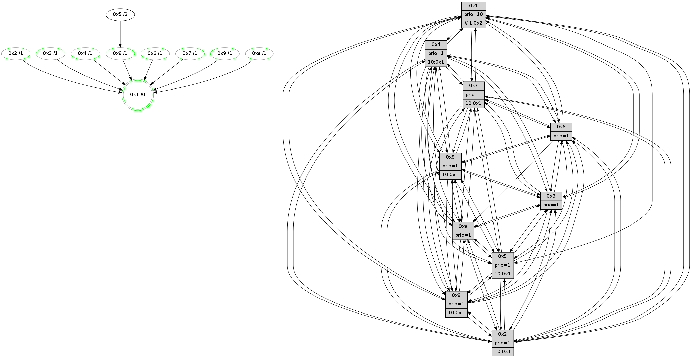

>> << IDX [start] -100 -25 -5 +0 +5 +25 +100 [1180.26065516]
 Previous packets
----------------------------------------------------------------------
1175.531868 beacon01(faad) #0 coord=01,02,03,04,05,06,07,0a,09,08 cycle=688.0ms assoc
-- color-indic=1 64 c6 19
1175.541850 beacon02(faad) #0 coord=01,02,03,04,05,06,07,0a,09,08 cycle=688.0ms assoc 64 55 28
1175.551850 beacon03(faad) #0 coord=01,02,03,04,05,06,07,0a,09,08 cycle=688.0ms assoc 64 2f 65
1175.561852 beacon04(faad) #0 coord=01,02,03,04,05,06,07,0a,09,08 cycle=688.0ms assoc 64 58 8f
1175.571851 beacon05(faad) #0 coord=01,02,03,04,05,06,07,0a,09,08 cycle=688.0ms assoc 64 22 c2
1175.581852 beacon06(faad) #0 coord=01,02,03,04,05,06,07,0a,09,08 cycle=688.0ms assoc 64 ac 15
1175.591852 beacon07(faad) #0 coord=01,02,03,04,05,06,07,0a,09,08 cycle=688.0ms assoc 64 d6 58
1175.601856 beacon0a(faad) #0 coord=01,02,03,04,05,06,07,0a,09,08 cycle=688.0ms assoc 64 a7 53
1175.611856 beacon09(faad) #0 coord=01,02,03,04,05,06,07,0a,09,08 cycle=688.0ms assoc 64 29 84
1175.621856 beacon08(faad) #0 coord=01,02,03,04,05,06,07,0a,09,08 cycle=688.0ms assoc 64 53 c9
1175.634023 [Hello(10): seq=683 sym=6,2,3,8,7,5,9,4,1 sysInfo=hasWarning stat=6:1,2,2,6/2:1,13,3,10/3:2,10,7,11/8:13,10,12,2/7:12,13,4,6/5:12,12,14,14/9:13,3,4,3/4:5,12,4,0/1:14,15,9,1]
1175.636746 [Hello(8): seq=694 sym=5,2,3,4,9,6,7,10,1 sysInfo=hasWarning stat=5:15,1,5,0/2:8,10,3,10/3:2,15,6,0/4:15,6,8,10/9:4,8,9,3/6:1,12,4,13/7:0,2,3,0/10:8,2,11,4/1:14,14,14,0]
1175.640531 [Color(8) seq=349 @0:0 prio=1 >10.@1,1.@2,1.@3,1.@4]
1175.642778 [Hello(4): seq=750 sym=5,7,6,2,3,9,8,10,1 sysInfo= stat=5:5,6,15,15/7:0,0,5,1/6:10,9,2,12/2:11,13,12,14/3:6,4,3,12/9:3,15,7,11/8:2,8,1,6/10:6,1,12,13/1:6,3,0,1]
1175.646222 [Color(4) seq=307 @0:0 prio=1 >10.@1,1.@2,1.@3,1.@5]
1175.648214 [Color(5) seq=344 @0:0 prio=1 >10.@1,1.@2,1.@3,1.@4]
1175.650908 [Hello(9): seq=694 sym=2,5,3,4,7,6,8,10,1 sysInfo=hasWarning stat=2:14,13,13,8/5:7,12,13,5/3:1,6,3,0/4:10,12,2,0/7:3,3,3,1/6:14,3,10,11/8:0,8,15,3/10:4,2,4,4/1:11,6,1,1]
1175.654031 [Color(9) seq=323 @0:0 prio=1 >10.@1,1.@2,1.@3,1.@4]
1175.657951 [Hello(7): seq=750 sym=2,3,5,6,4,8,9,10,1 sysInfo=hasWarning stat=2:15,4,12,1/3:4,11,11,0/5:6,11,6,1/6:2,15,8,9/4:7,3,5,1/8:2,3,0,0/9:0,1,0,0/10:11,2,13,5/1:15,13,15,0]
1175.662373 [Color(7) seq=296 @0:0 prio=1 >10.@1,1.@2,1.@3,1.@4]
1175.666232 [STC(1) #0.183 tree-change,inconsistent-stability,stable,to-color d=0]
1175.668188 [Color(1) seq=431 @0:0 prio=10 >>1.@2,1.@3,1.@4]
----------------------------------------------------------------------
1176.319999 beacon01(faad) #0 coord=01,02,03,04,05,06,07,0a,09,08 cycle=688.0ms assoc
-- color-indic=1 64 02 17
1176.329982 beacon02(faad) #0 coord=01,02,03,04,05,06,07,0a,09,08 cycle=688.0ms assoc 64 91 26
1176.339982 beacon03(faad) #0 coord=01,02,03,04,05,06,07,0a,09,08 cycle=688.0ms assoc 64 eb 6b
1176.349982 beacon04(faad) #0 coord=01,02,03,04,05,06,07,0a,09,08 cycle=688.0ms assoc 64 9c 81
1176.359983 beacon05(faad) #0 coord=01,02,03,04,05,06,07,0a,09,08 cycle=688.0ms assoc 64 e6 cc
1176.369982 beacon06(faad) #0 coord=01,02,03,04,05,06,07,0a,09,08 cycle=688.0ms assoc 64 68 1b
1176.379983 beacon07(faad) #0 coord=01,02,03,04,05,06,07,0a,09,08 cycle=688.0ms assoc 64 12 56
1176.389987 beacon0a(faad) #0 coord=01,02,03,04,05,06,07,0a,09,08 cycle=688.0ms assoc 64 63 5d
1176.399988 beacon09(faad) #0 coord=01,02,03,04,05,06,07,0a,09,08 cycle=688.0ms assoc 64 ed 8a
1176.409987 beacon08(faad) #0 coord=01,02,03,04,05,06,07,0a,09,08 cycle=688.0ms assoc 64 97 c7
1176.421284 [STC(9)->1 #0.183 tree-change,inconsistent-stability,stable,to-color d=1]
1176.424508 [Hello(5): seq=751 sym=7,6,4,3,9,8,10,2 sysInfo=hasWarning stat=7:7,1,8,13/6:6,10,10,2/4:4,9,0,13/3:10,5,1,14/9:10,5,1,9/8:3,3,12,2/10:13,3,0,8/2:4,8,2,6]
1176.427004 [STC(8)->1 #0.183 tree-change,inconsistent-stability,stable,to-color d=1]
1176.428361 [Hello(2): seq=747 sym=4,5,7,6,3,9,8,10,1 sysInfo=hasWarning stat=4:7,12,6,11/5:13,11,12,0/7:1,7,7,14/6:9,0,12,11/3:0,13,11,9/9:14,14,0,7/8:11,9,6,11/10:10,6,2,10/1:3,15,12,0]
1176.431393 [STC(10)->1 #0.183 tree-change,inconsistent-stability,stable,to-color d=1]
1176.435837 [Color(2) seq=327 @0:0 prio=1 >10.@1,1.@3,1.@4,1.@5]
1176.439335 [Hello(6): seq=751 sym=2,3,5,4,7,9,8,10,1 sysInfo=hasWarning stat=2:1,3,0,0/3:13,8,15,12/5:11,2,1,1/4:11,0,11,5/7:14,9,7,12/9:13,4,5,8/8:0,14,0,5/10:8,5,5,12/1:1,10,0,1]
1176.443454 [STC(7)->1 #0.183 tree-change,inconsistent-stability,stable,to-color d=1]
1176.445384 [Color(6) seq=383 @0:0 prio=1]
1176.448691 [STC(4)->1 #0.183 tree-change,inconsistent-stability,stable,to-color d=1]
1176.451678 [STC(3)->1 #0.183 tree-change,inconsistent-stability,stable,to-color d=1]
1176.454750 [Color(10) seq=340 @0:0 prio=1]
1176.459204 [Color(3) seq=380 @0:0 prio=1]
----------------------------------------------------------------------
1177.108132 beacon01(faad) #0 coord=01,02,03,04,05,06,07,0a,09,08 cycle=688.0ms assoc
-- color-indic=1 64 be 12
1177.118114 beacon02(faad) #0 coord=01,02,03,04,05,06,07,0a,09,08 cycle=688.0ms assoc 64 2d 23
1177.128116 beacon03(faad) #0 coord=01,02,03,04,05,06,07,0a,09,08 cycle=688.0ms assoc 64 57 6e
1177.138116 beacon04(faad) #0 coord=01,02,03,04,05,06,07,0a,09,08 cycle=688.0ms assoc 64 20 84
1177.148114 beacon05(faad) #0 coord=01,02,03,04,05,06,07,0a,09,08 cycle=688.0ms assoc 64 5a c9
1177.158116 beacon06(faad) #0 coord=01,02,03,04,05,06,07,0a,09,08 cycle=688.0ms assoc 64 d4 1e
1177.168116 beacon07(faad) #0 coord=01,02,03,04,05,06,07,0a,09,08 cycle=688.0ms assoc 64 ae 53
1177.178119 beacon0a(faad) #0 coord=01,02,03,04,05,06,07,0a,09,08 cycle=688.0ms assoc 64 df 58
1177.188119 beacon09(faad) #0 coord=01,02,03,04,05,06,07,0a,09,08 cycle=688.0ms assoc 64 51 8f
1177.198122 beacon08(faad) #0 coord=01,02,03,04,05,06,07,0a,09,08 cycle=688.0ms assoc 64 2b c2
1177.209362 [STC(5)->8-.->1 #0.183 to-color d=2]
1177.211687 [Hello(10): seq=684 sym=6,2,3,8,7,5,9,4,1 sysInfo=hasWarning stat=6:1,2,2,6/2:1,13,3,10/3:2,11,7,11/8:14,11,12,2/7:13,14,4,6/5:13,13,14,14/9:14,4,4,3/4:6,13,4,0/1:15,0,10,1]
1177.214412 [Hello(4): seq=751 sym=5,7,6,2,3,9,8,10,1 sysInfo= stat=5:5,7,15,15/7:1,1,5,1/6:10,9,2,12/2:11,13,12,14/3:6,5,4,12/9:4,0,7,11/8:2,8,1,6/10:7,2,12,13/1:6,4,1,1]
1177.218057 [Color(1) seq=432 @0:0 prio=10 >>1.@2,1.@3,1.@4]
1177.219670 [Hello(9): seq=695 sym=2,5,3,4,7,6,8,10,1 sysInfo=hasWarning stat=2:15,14,14,8/5:8,12,13,5/3:1,7,4,0/4:10,12,3,0/7:4,4,3,1/6:15,4,11,11/8:0,8,0,3/10:5,3,5,4/1:11,7,2,1]
1177.223786 [Color(9) seq=324 @0:0 prio=1 >10.@1,1.@2,1.@3,1.@4]
1177.225547 [Hello(7): seq=751 sym=2,3,5,6,4,8,9,10,1 sysInfo=hasWarning stat=2:15,4,12,1/3:4,12,12,0/5:6,11,6,1/6:2,0,8,9/4:7,3,6,1/8:2,3,0,0/9:0,1,0,0/10:12,3,13,5/1:15,14,0,0]
1177.228366 [Color(7) seq=297 @0:0 prio=1 >10.@1,1.@2,1.@3,1.@4]
1177.231583 [Color(4) seq=308 @0:0 prio=1 >10.@1,1.@2,1.@3,1.@5]
1177.236897 [Hello(8): seq=695 sym=5,2,3,4,9,6,7,10,1 sysInfo=hasWarning stat=5:15,2,5,0/2:9,11,4,10/3:2,0,7,0/4:0,7,9,10/9:5,9,9,3/6:2,13,5,13/7:1,3,3,0/10:9,3,12,4/1:14,15,15,0]
1177.239742 [Color(8) seq=350 @0:0 prio=1 >10.@1,1.@2,1.@3,1.@4]
----------------------------------------------------------------------
1177.896263 beacon01(faad) #0 coord=01,02,03,04,05,06,07,0a,09,08 cycle=688.0ms assoc
-- color-indic=1 64 6a 27
1177.906245 beacon02(faad) #0 coord=01,02,03,04,05,06,07,0a,09,08 cycle=688.0ms assoc 64 f9 16
1177.916245 beacon03(faad) #0 coord=01,02,03,04,05,06,07,0a,09,08 cycle=688.0ms assoc 64 83 5b
1177.926246 beacon04(faad) #0 coord=01,02,03,04,05,06,07,0a,09,08 cycle=688.0ms assoc 64 f4 b1
1177.936247 beacon05(faad) #0 coord=01,02,03,04,05,06,07,0a,09,08 cycle=688.0ms assoc 64 8e fc
1177.946246 beacon06(faad) #0 coord=01,02,03,04,05,06,07,0a,09,08 cycle=688.0ms assoc 64 00 2b
1177.956246 beacon07(faad) #0 coord=01,02,03,04,05,06,07,0a,09,08 cycle=688.0ms assoc 64 7a 66
1177.966250 beacon0a(faad) #0 coord=01,02,03,04,05,06,07,0a,09,08 cycle=688.0ms assoc 64 0b 6d
1177.976251 beacon09(faad) #0 coord=01,02,03,04,05,06,07,0a,09,08 cycle=688.0ms assoc 64 85 ba
1177.986252 beacon08(faad) #0 coord=01,02,03,04,05,06,07,0a,09,08 cycle=688.0ms assoc 64 ff f7
1177.997509 [Hello(1): seq=661 sym=4,2,9,5,10,3,8,6,7 sysInfo=coloring-mode-on,ColoringModeRequestCalled stat=4:7,5,4,5/2:13,15,6,2/9:0,1,0,0/5:6,8,14,7/10:6,8,12,6/3:0,2,0,7/8:6,2,0,3/6:14,3,7,13/7:8,5,1,14]
1178.001047 [Hello(5): seq=752 sym=7,6,4,3,9,8,10,2 sysInfo=hasWarning stat=7:8,2,9,13/6:7,11,10,2/4:5,10,1,13/3:10,6,2,14/9:11,6,1,9/8:4,4,13,2/10:14,4,1,8/2:5,9,3,6]
1178.004168 [Hello(2): seq=748 sym=4,5,7,6,3,9,8,10,1 sysInfo=hasWarning stat=4:8,13,7,11/5:13,11,13,0/7:2,8,8,14/6:10,1,12,11/3:0,14,12,9/9:15,15,0,7/8:12,10,6,11/10:11,7,2,10/1:3,0,12,0]
1178.007526 [Hello(6): seq=752 sym=2,3,5,4,7,9,8,10,1 sysInfo=hasWarning stat=2:1,3,0,0/3:13,9,0,12/5:12,2,2,1/4:12,1,12,5/7:15,10,7,12/9:14,5,5,8/8:1,15,0,5/10:9,6,5,12/1:2,11,0,1]
1178.010004 [Color(10) seq=341 @0:0 prio=1]
1178.011751 [Color(6) seq=384 @0:0 prio=1]
1178.013975 [Hello(3): seq=752 sym=1,7,6,2,4,8,9,10,5 sysInfo=hasWarning stat=1:14,11,13,0/7:1,11,14,12/6:7,14,1,0/2:5,10,2,0/4:11,8,1,11/8:13,7,11,4/9:9,14,4,14/10:3,7,13,4/5:11,0,9,15]
1178.017106 [Color(3) seq=381 @0:0 prio=1]
----------------------------------------------------------------------
1178.684395 beacon01(faad) #0 coord=01,02,03,04,05,06,07,0a,09,08 cycle=688.0ms assoc
-- color-indic=1 64 d6 22
1178.694377 beacon02(faad) #0 coord=01,02,03,04,05,06,07,0a,09,08 cycle=688.0ms assoc 64 45 13
1178.704378 beacon03(faad) #0 coord=01,02,03,04,05,06,07,0a,09,08 cycle=688.0ms assoc 64 3f 5e
1178.714378 beacon04(faad) #0 coord=01,02,03,04,05,06,07,0a,09,08 cycle=688.0ms assoc 64 48 b4
1178.724377 beacon05(faad) #0 coord=01,02,03,04,05,06,07,0a,09,08 cycle=688.0ms assoc 64 32 f9
1178.734379 beacon06(faad) #0 coord=01,02,03,04,05,06,07,0a,09,08 cycle=688.0ms assoc 64 bc 2e
1178.744379 beacon07(faad) #0 coord=01,02,03,04,05,06,07,0a,09,08 cycle=688.0ms assoc 64 c6 63
1178.754383 beacon0a(faad) #0 coord=01,02,03,04,05,06,07,0a,09,08 cycle=688.0ms assoc 64 b7 68
1178.764385 beacon09(faad) #0 coord=01,02,03,04,05,06,07,0a,09,08 cycle=688.0ms assoc 64 39 bf
1178.774383 beacon08(faad) #0 coord=01,02,03,04,05,06,07,0a,09,08 cycle=688.0ms assoc 64 43 f2
1178.785953 [Hello(10): seq=685 sym=2,3,8,7,5,9,4,1 sysInfo=hasWarning stat=2:1,13,3,10/3:3,12,7,11/8:15,12,12,2/7:14,15,4,6/5:13,13,14,14/9:15,5,4,3/4:7,14,4,0/1:0,1,10,1]
1178.789235 [Hello(7): seq=752 sym=2,3,5,6,4,8,9,10,1 sysInfo=hasWarning stat=2:0,4,12,1/3:5,13,12,0/5:7,11,7,1/6:3,1,8,9/4:7,4,6,1/8:3,4,0,0/9:0,1,0,0/10:13,3,13,5/1:0,14,0,0]
1178.792077 [Color(7) seq=298 @0:0 prio=1 >10.@1,1.@2,1.@3,1.@4]
1178.793794 [Hello(4): seq=752 sym=5,7,6,2,3,9,8,10,1 sysInfo= stat=5:6,7,0,15/7:1,1,5,1/6:11,10,2,12/2:12,13,12,14/3:7,6,4,12/9:4,0,7,11/8:3,9,1,6/10:8,2,12,13/1:7,4,1,1]
1178.797890 [Color(4) seq=309 @0:0 prio=1 >10.@1,1.@2,1.@3,1.@5]
1178.805197 [Color(9) seq=325 @0:0 prio=1 >10.@1,1.@2,1.@3,1.@4]
1178.808462 [Color(1) seq=433 @0:0 prio=10 >>1.@2,1.@3,1.@4]
1178.815404 [Color(8) seq=351 @0:0 prio=1 >10.@1,1.@2,1.@3,1.@4]
----------------------------------------------------------------------
1179.472525 beacon01(faad) #0 coord=01,02,03,04,05,06,07,0a,09,08 cycle=688.0ms assoc
-- color-indic=1 64 12 2c
1179.482507 beacon02(faad) #0 coord=01,02,03,04,05,06,07,0a,09,08 cycle=688.0ms assoc 64 81 1d
1179.492506 beacon03(faad) #0 coord=01,02,03,04,05,06,07,0a,09,08 cycle=688.0ms assoc 64 fb 50
1179.502507 beacon04(faad) #0 coord=01,02,03,04,05,06,07,0a,09,08 cycle=688.0ms assoc 64 8c ba
1179.512508 beacon05(faad) #0 coord=01,02,03,04,05,06,07,0a,09,08 cycle=688.0ms assoc 64 f6 f7
1179.522509 beacon06(faad) #0 coord=01,02,03,04,05,06,07,0a,09,08 cycle=688.0ms assoc 64 78 20
1179.532508 beacon07(faad) #0 coord=01,02,03,04,05,06,07,0a,09,08 cycle=688.0ms assoc 64 02 6d
1179.542512 beacon0a(faad) #0 coord=01,02,03,04,05,06,07,0a,09,08 cycle=688.0ms assoc 64 73 66
1179.552513 beacon09(faad) #0 coord=01,02,03,04,05,06,07,0a,09,08 cycle=688.0ms assoc 64 fd b1
1179.562513 beacon08(faad) #0 coord=01,02,03,04,05,06,07,0a,09,08 cycle=688.0ms assoc 64 87 fc
1179.574083 [Hello(1): seq=662 sym=4,2,9,5,10,3,8,6,7 sysInfo=coloring-mode-on,ColoringModeRequestCalled stat=4:7,5,4,5/2:14,15,6,2/9:0,1,0,0/5:7,8,14,7/10:7,9,12,6/3:1,3,0,7/8:6,3,0,3/6:15,4,7,13/7:8,5,1,14]
1179.577546 [STC(1) #0.184 tree-change,inconsistent-stability,stable,to-color d=0]
1179.578972 [Color(10) seq=342 @0:0 prio=1]
1179.580962 [Hello(5): seq=753 sym=7,6,4,3,9,8,10,2 sysInfo=hasWarning stat=7:9,3,9,13/6:8,12,10,2/4:6,11,1,13/3:11,7,2,14/9:12,7,1,9/8:4,5,13,2/10:15,4,1,8/2:6,10,3,6]
1179.585753 [Hello(3): seq=753 sym=1,7,6,2,4,8,9,10,5 sysInfo=hasWarning stat=1:15,12,13,0/7:2,12,14,12/6:7,14,1,0/2:5,10,2,0/4:12,9,1,11/8:14,8,11,4/9:9,15,4,14/10:4,7,13,4/5:11,0,9,15]
1179.589025 [Hello(6): seq=753 sym=2,3,5,4,7,9,8,10,1 sysInfo=hasWarning stat=2:1,3,0,0/3:14,10,0,12/5:12,2,2,1/4:13,2,12,5/7:0,11,7,12/9:14,6,5,8/8:2,0,0,5/10:10,6,5,12/1:3,12,0,1]
1179.592239 [Color(3) seq=382 @0:0 prio=1]
1179.593570 [Color(6) seq=385 @0:0 prio=1]
1179.596077 [Hello(2): seq=749 sym=4,5,7,6,3,9,8,10,1 sysInfo=hasWarning stat=4:9,14,7,11/5:13,11,13,0/7:3,9,8,14/6:10,2,12,11/3:1,15,12,9/9:0,0,0,7/8:12,11,6,11/10:12,7,2,10/1:4,1,12,0]
1179.600176 [Color(2) seq=329 @0:0 prio=1 >10.@1,1.@3,1.@4,1.@5]